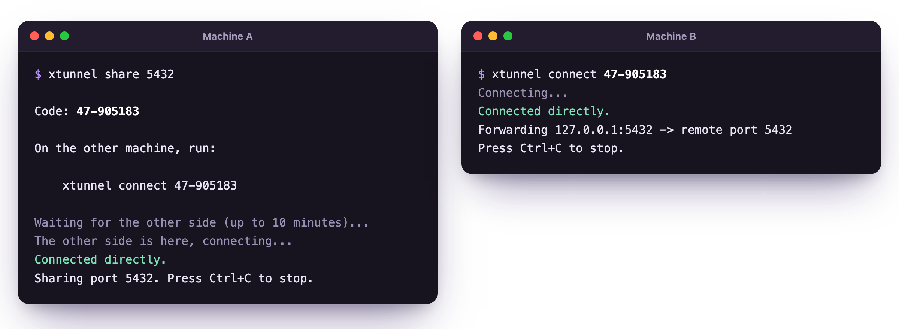

XTunnel
Share a TCP port between two machines over an encrypted peer-to-peer tunnel.
curl -fsSL https://xazar-mammadli.github.io/XTunnel/install.sh | sh
For Linux and macOS · Windows zip · Free and open source

Features
One command on each machine, and the port is there.
-
One short code
xtunnel shareprints a code like47-905183;xtunnel connectwith it reaches the port from anywhere. -
Direct
Traffic goes straight between the two machines, through NATs, not through a server.
-
Encrypted end to end
QUIC with TLS 1.3, bound to the code, so nobody in between can read or take over the tunnel.
-
Any TCP port
Databases, web apps, SSH and more, several ports at once.
-
Nothing to set up
A free public relay introduces the two sides. You can also pair offline or host your own.
-
One small binary
No accounts and no installers to click through, on Linux, macOS and Windows.
Security
XTunnel opens a path into your machine, so it is careful with it.
- Traffic is encrypted end to end. The relay only introduces the two sides and can’t read or change the tunnel.
- Codes are one-time: a wrong guess or a second use closes the room.
- The sharing side only accepts connections to the ports you list, on 127.0.0.1.
- No accounts and no tracking. The code, the protocol and the relay are open source.
Install
Three steps, and the port is shared.
-
Install
Run the command below on both machines. On Windows, download the zip of the latest release.
-
Share
On the machine with the service, run
xtunnel share 5432. It prints a one-time code. -
Connect
On the other machine, run
xtunnel connect 47-905183. The port is now at 127.0.0.1:5432.
curl -fsSL https://xazar-mammadli.github.io/XTunnel/install.sh | sh
XTunnel is free and runs on Linux, macOS and Windows.
Download XTunnel